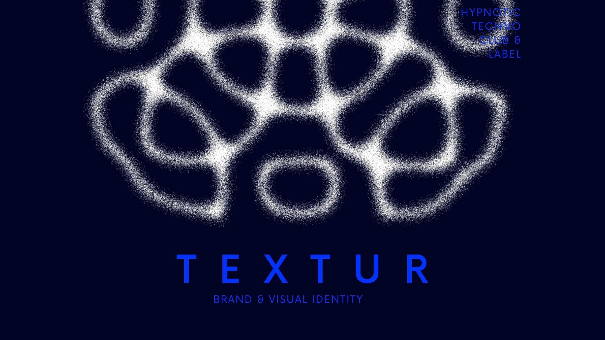
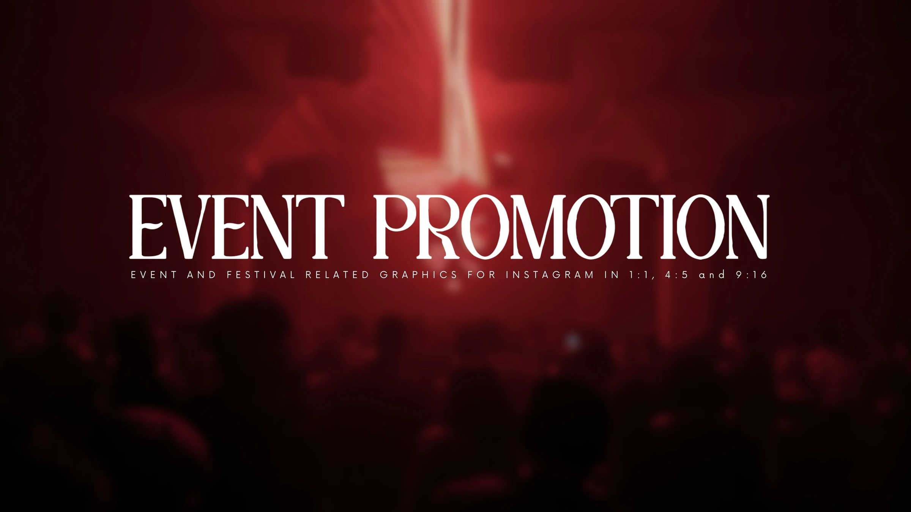
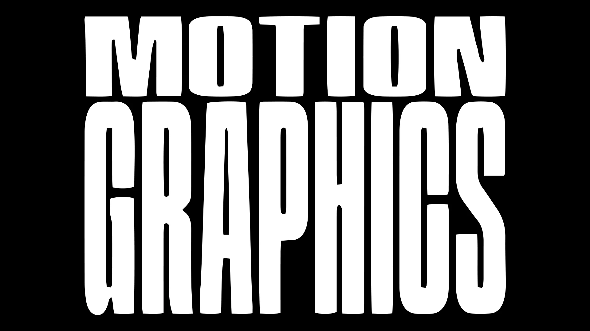
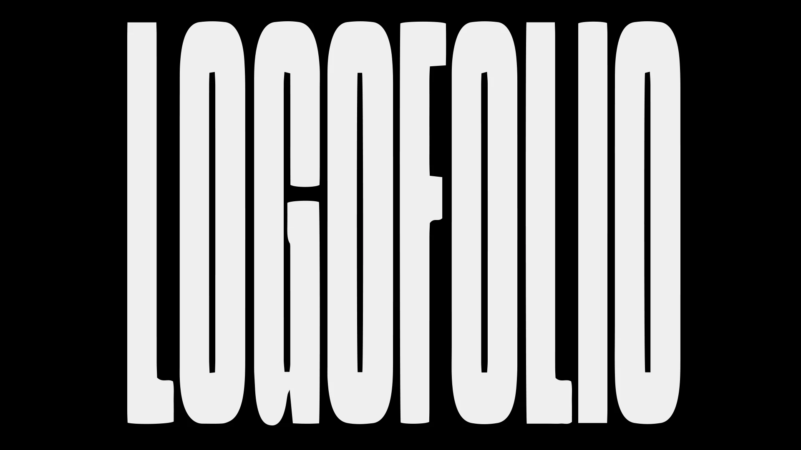
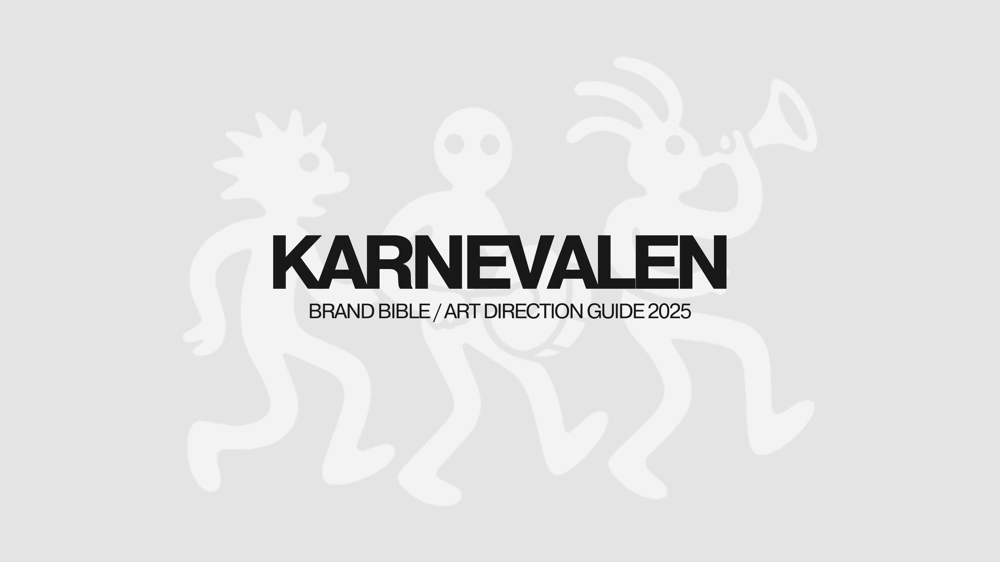

Graphic design / Earlier work
Design
My journey in business and entrepreneurship started with one fascination: branding.
The fact that an idea can be shaped through visual, emotional and rational choices felt like magic then, and it still does. Graphic design was where I began practising that craft. My work now reaches further into marketing and AI-assisted systems, but design and brand thinking still run through everything I build.
Below is a selection from the years when graphic design was the work itself.

01
TEXTUR Brand Showcase
Brand identity · 06 images

02
Event & Festival Social Media Design
Digital design · 03 images

03
Social Media Motion Graphics
Motion design · 09 films

04
Logofolio
Logos / Wordmarks / Mascots · 08 images

05
Karnevalen Brand Bible
Brand identity / Art direction · 24 images